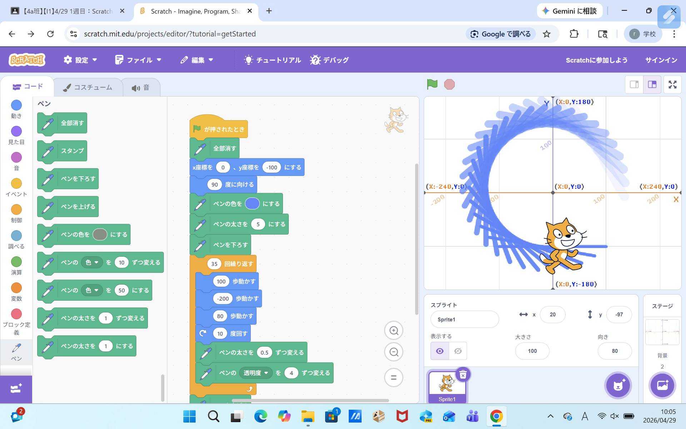
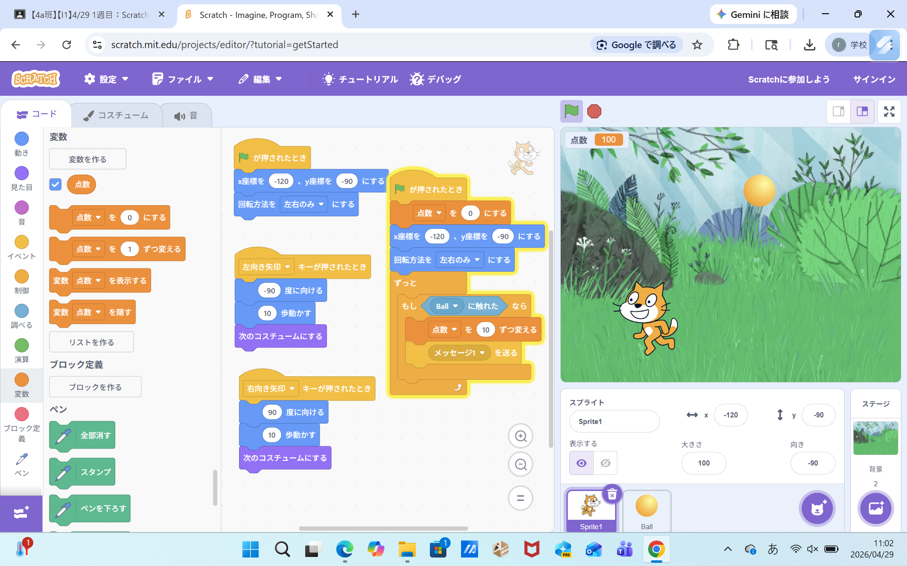

1週目のレポート ： 公大高専１年実習I-1
4a班11番 北
第1週目
1-1 サイエンスアート

1.内容
スクラッチを開き、背景を座標にして、ねこが円を描くようにブロックをつなげる。その後、ペンを追加すると円がかける。
猫を左右に動かしながら回転させ、ペンの色を変えていくと虹色の円ができた。＜br＞ 2.感想
プログラミングを今までしたことなかったけど、手順道理にすれば以外と簡単だった。＜br＞ でも、プログラミングしている最中に急にブロックがたくさん複製されたり、突然消えたりして、困った。
1-2 ゲーム

1.内容
初めに、左右に動く猫のプログラミングを作るためにイベントブロックをつかって組み立てた。＜br＞ そのあとに、ボールがいろんなところから様々な速度で落ちるように組み立てて、最後にボールが猫に当たると消えるように組み立てた。＜br＞ 2.感想
途中でボールが消えたり、猫が動かなくなったりして、すごく焦ったけど、周りの人が助けてくれて解決できた。＜br＞ 自分で作ったゲームをするのはすごく楽しかった。＜br＞
1-3 ホームページ作成
私のホームページ
1.内容
githubのアカウントを作成し、自分のホームページを編集できるところで自分の名前や趣味などを書き込めるところに書き込んだ。
2.感想
学習した内容を実践したときに自分が感じた感想を
自分で考えた文章で作成する（50文字以上．100文字程度を推奨．※生成AIを使ってはいけない）
各ページへのリンク
1週目のレポート
2週目のレポート
3週目のレポート
私のホームページ